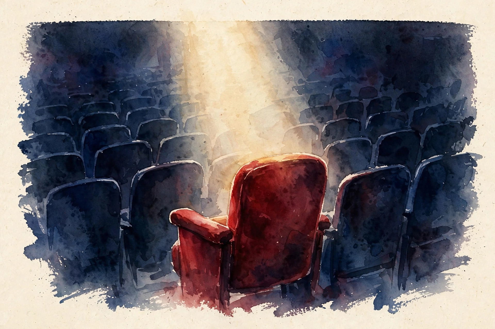
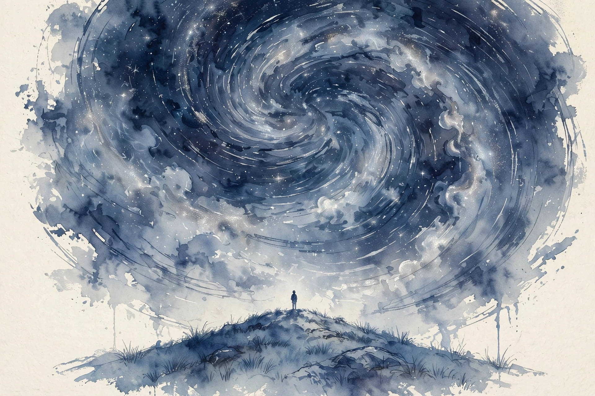

The Wisdom Index: every nugget in this companion
- Power is an inner quality, not a position
- Demonstration ends the argument
- Follow the thread back to childhood
- Loosen the grip to perform
- Force options D, E, and F
- Craft the character, back it with substance
- Cynicism is not intelligence
- Hire for character, train for skill
- Withdraw to grow desire. Seed desire to grow desire.
- Smallness restores awe, and awe is power
Source fact A claim from the episode transcript. Interpretation My read on what it means. Times marked ~ are proportional estimates from word position, since the transcript carries no timestamps.
~00:00
Power Is Not Status
Photo. Robert Greene. Source: Lifeboat Foundation advisory board bio, via lifeboat.com.
Source fact The opening distinction: status is a position that grants access. Power is an inner quality. You can hold status without power. Greene cites a charismatic CEO he served under: magnetic, all over the place, no self-control. That is status without power. You can also hold power without status, and if the power is real, the position eventually follows.
Source fact Greene's own story is the proof. He counted more than 60 jobs, restless, hating working for others. He pitched The 48 Laws of Power at 36. The lesson he draws: he never gave up, kept a spark alive through depressed stretches, and trusted the one talent he had. Purpose outlasted every job.
Nugget 1 · Power
Power is an inner quality, not a position
What happened. Status grants access. Power is control over your emotions, the ability to see ahead, and the discipline to act.
Why it matters. Status without power collapses. Power without status eventually earns the position.
The principle. Build the inner quality. Let the position follow.
~00:14
Law 1: Win Through Your Actions
Illustration. Wren's floating column: victory without an argument. AI-generated watercolor.
demonstrate do not explicate
Robert Greene on Modern Wisdom, ~00:14
Source fact Demonstrate. Do not explicate. Explaining yourself puts you in the weak position, because nobody trusts words anymore. The room is flooded with talk. Action cuts through.
Source fact The Christopher Wren story: a critic said Wren's church needed another column to hold the roof. Wren added the column but left a gap at the top. It held nothing. The critic felt he had won. Wren had won, without an argument. Malicious compliance, done masterfully.
Nugget 2 · Action
Demonstration ends the argument
What happened. Wren's column held nothing and satisfied the critic. No debate was needed.
Why it matters. Explanation invites counter-argument. Demonstration bypasses it entirely.
The principle. Pick one thing you would normally explain and demonstrate it instead.
~00:21
Law 2: Purpose Before Money
Source fact Concentrate on maintaining a high sense of purpose and success flows to you naturally. The trap is to count in your twenties: followers, salary, comparisons. Purpose is the thread that connects you to childhood inclinations. Greene's was prose. He tried journalism, Hollywood, and kept returning to the craft.
Source fact After The 48 Laws of Power succeeded, he refused to write the sequel the market wanted. His purpose was to branch into new directions, not milk the hit. Money follows purpose. Purpose chased as money dies.
Nugget 3 · Purpose
Follow the thread back to childhood
What happened. Greene's purpose was prose, and every detour returned to it. He refused to milk the hit.
Why it matters. Counting followers and salary in your twenties measures the wrong thing. Purpose outlasts every job.
The principle. Name your childhood thread. Refuse the sequel the market wants.
~00:25
Law 3: Hyperintention Causes Hyperanxiousness
Source fact Gripping too tightly ruins performance. In seduction, visible desperation repels. In writing, forcing the idea blocks it. Greene's pool table story: he practiced daily, then melted against real opponents because winning mattered too much. When he learned to relax and enjoy the game, performance returned.
Source fact The method is release through experience. Step back, listen to music, watch a game. The idea arrives when the grip loosens. The danger is a death-grip on your calling, until the stakes crush the work. Seriousness needs a release valve.
Nugget 4 · Release
Loosen the grip to perform
What happened. The pool game returned when winning stopped mattering so much.
Why it matters. A death-grip on your calling crushes the work the calling needs.
The principle. When the grip tightens, step back for one hour. Return and compare.
~00:33
Law 4: Cultivate Negative Capability
Source fact Develop the habit of suspending judgment. Entertain views opposite to your own. Break your normal train of thought.
Source fact The mechanism: most people start a project seeing only options A, B, and C. A is what they always do. B is what someone else did. C is the odd one they will never try. Negative capability adds D, E, and F. It asks what your enemy would do. It drops the ego enough to admit someone else's approach is better.
Source fact Mozart's late career is the example. He studied Bach's counterpoint, admitted its superiority in that dimension, and absorbed it. The result was a new creative level. Startups win the same way: under 50 people, no diseconomies of scale, able to pivot while leviathans lumber.
Nugget 5 · Openness
Force options D, E, and F
What happened. Mozart admitted Bach's counterpoint was better in that dimension and absorbed it.
Why it matters. The ego locks you into A, B, and C. The breakthrough lives in the options you would never try.
The principle. Ask what your enemy would do. Then steal the best of it.
~00:43
Law 5: Remake Yourself Into a Character of Power
Source fact Work on yourself like clay. People judge by appearance and presence, then lock the judgment in. That lock constrains your freedom. So take control of the image deliberately. You are always crafting a persona for the room. Make it conscious.
Source fact David Bowie and Picasso changed image every few years and grew more powerful each time. George Sand took a man's name, dressed as a man, and built an aura that carried her novels. The warning is Elizabeth Holmes: image without substance is fraud. The black turtleneck worked as marketing. The missing product made it a crime. Craft the character, but back it with real work.
Nugget 6 · Image
Craft the character, back it with substance
What happened. Bowie and Picasso remade themselves every few years. Holmes proved the marketing half works and the substance half is not optional.
Why it matters. People lock their judgment of you early. Deliberate image is freedom. Empty image is fraud.
The principle. Choose your persona consciously. Then do the work it promises.
~00:58
Law 6: Do Not Be the Court Cynic
Source fact The ability to express wonder and amazement, and seem like you mean it, is rare and therefore powerful. Cynicism is the default of the modern court. Everyone performs disbelief to look smart.
Source fact The correction: cynicism is not intelligence. The neuroscientist Ramachandran, interviewed for Greene's Mastery, argued the opposite stance. Childlike wonder at the world produces discoveries. Performed skepticism produces nothing. Online, the disarming move is simple: that is worth a look, can you link me so I can learn more. Good faith stated plainly mutes the entire argument.
Nugget 7 · Wonder
Cynicism is not intelligence
What happened. Ramachandran's stance: childlike wonder produces discoveries. Performed skepticism produces nothing.
Why it matters. Genuine openness is rare, so it disarms. Everyone else performs disbelief.
The principle. State good faith plainly. Understand the idea first, judge it privately.
~01:15
Law 7: Judge Them by Behavior, Not Words
Source fact Character reveals itself over time. The number one consulting problem Greene sees: people hire dazzling resumes and charming smiles, then discover disasters. The fix is to look past appearance at patterns.
Source fact Strong character has three marks. They take criticism without collapsing. They handle stress without turning infantile. They subsume ego and work as a team. The Navy SEAL dichotomy, quoted in the episode: hire for skills, fire for attributes. Skills are teachable in weeks. Character is not.
Source fact The interview tactic: make them sweat a little. A good answer sounds like I do not know, good question, let me think. A weak answer gets defensive and blames others. The pebble at the top of the avalanche: defensiveness in an interview predicts catastrophe later. Read the resume for patterns, not titles. Fired every two years with every boss blamed is a pattern, and it will recur with you.
Nugget 8 · Character
Hire for character, train for skill
What happened. Skills teach in weeks. Character does not. Defensiveness in the interview is the avalanche pebble.
Why it matters. The dazzling resume plus the charming smile is the number one hiring disaster.
The principle. Read patterns, not titles. Stress them lightly and watch.
~01:22
Laws 8 and 9: Strategic Absence, Mimetic Desire

Illustration. Withdrawal creates space for imagination, and imagination flatters. AI-generated watercolor.
if i am often seen at the theater people will cease to notice me
Napoleon, as quoted by Robert Greene, ~01:22
Source fact Law 8: the more you are seen and heard, the more common you appear. If you are established in a group, withdraw temporarily. People start thinking about you, wondering, imagining depth. Napoleon's line, quoted in the episode: if I am often seen at the theater, people will cease to notice me.
Source fact The social media age runs the opposite strategy: constant presence, hourly posts. Greene's verdict is that it breeds a quiet contempt. The audience feels the trying. In dating the dynamic is obvious. Constant texting, the love bombing phase, turns tiring within days and reads as desperation. A pause after a pattern makes them wonder and try harder.
Source fact Law 9: build a reputation that precedes you. Desire is mimetic: we want what others want. The restaurant test: one couple in a vast room reads as a warning. A packed, laughing room reads as a reason. Nobody admits the calculus. Everybody runs it.
Source fact Coco Chanel did it commercially: she hired women to wear her designs everywhere, so other women saw the desire and joined it. The 1920s Fifth Avenue smoking march, branded freedom torches, turned a stigma into a liberation symbol. One of the great campaigns of the modern era, built entirely on mimetic desire.
The thirteen laws in four triads
Hover each triad for its laws.
Source: Modern Wisdom, Robert Greene, The Daily Laws. The triad grouping from the episode's content.
Nugget 9 · Presence
Withdraw to grow desire. Seed desire to grow desire.
What happened. Absence makes people imagine depth. Mimetic desire manufactures attraction from the appearance of attraction.
Why it matters. Omnipresence breeds quiet contempt. The audience feels the trying.
The principle. Disappear for a day, return slightly unpredictable. Build the reputation that precedes you.
~01:45
Laws 10 to 13: Time, Groups, Fools, Smallness

Illustration. Thirteen billion years against your decades. Smallness restores awe. AI-generated watercolor.
Source fact Law 10: your time is your only true possession. It can be 60 years or 20. Wasting it on trivial fights or miserable jobs gives the treasure away. People who own your schedule own your life.
Source fact Dead time versus live time: dead time is the brown, withering hours at the hated job, going home bitter. Live time is the same hours reclaimed. Tell yourself the job is temporary, study at night, learn the psychologies around you, find what the worst job can teach. The brown branch greens again.
Source fact The 3:30am supermarket story, from the host: existential dread in the fluorescent aisles, cured by one habit. Care about one stranger for 30 seconds. Ask the shelf-stacker how the night goes. Energy aimed outward dissolves the inward spiral.
Source fact Law 11: never relinquish your ability to doubt, reflect, and consider other options. Groups go mad in a specific way: consequences diffuse, so reflection stops. An individual who picks a bad path pays fully and therefore thinks. A group signing off on the boss's bad idea shares the blame, so nobody thinks.
Source fact Law 12: detach emotionally from fools. Inwardly laugh, outwardly indulge their harmless ideas. Greene admits this is his weakest law. The method is recall of your own foolishness. You play the fool too. Everyone does.
Source fact Law 13: the fact of your smallness, fully felt, is what makes you significant. The episode's science tour restores the scale. The Big Bang, 13 billion years ago. Life sparking in some small pool. One bacterium eating another, once in cosmic history, creating all complex life. The asteroid 60 million years ago nearly missing. Seventy thousand generations of improbable meetings ending in you. You are five or six feet of space against all of that. Feeling it returns the curiosity, and curiosity is power.
Toy: which law do you need today
Pick the situation that matches your day. The toy names the law.
Toy: the dead-time audit
Estimate your weekly dead hours. The toy does the Greene math.
Nugget 10 · Scale
Smallness restores awe, and awe is power
What happened. Seventy thousand generations of improbable meetings ended in you. Thirteen billion years against your decades.
Why it matters. The adult ego shrinks the universe to a dull size. True scale returns curiosity, and curiosity drives learning.
The principle. Own your hours. Keep your doubt. Feel the smallness and get to work.
The episode in seven lines
- Power is inner quality. Status is a position. Build the first.
- Demonstrate, do not explicate. Action ends arguments.
- Purpose before money. Follow the thread back to childhood.
- Force options D, E, and F. Ask what your enemy would do.
- Judge behavior, not words. Hire for character, train for skill.
- Withdraw to grow desire. Desire is mimetic: seed it.
- Own your time, keep your doubt, feel your smallness.
Distilled from Modern Wisdom, Robert Greene: The Daily Laws of Power, Oct 2021. Full episode: youtube.com/watch?v=BWJ4vnXIvts. Times are proportional estimates from the transcript.